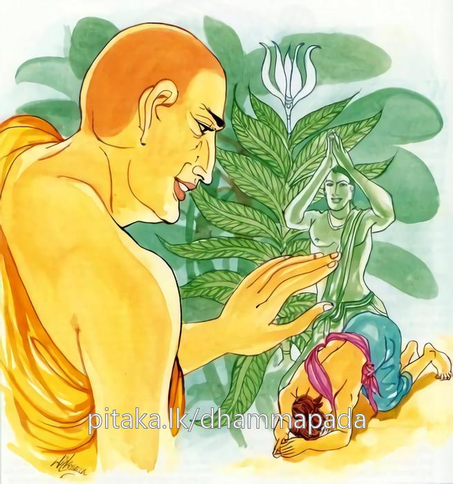

8-8 ආයු වැඩෙන සැටි
මෙම කතාව ධම්මපද අටුවාවෙන් ද කියවන්න.
අභිවාදනසීලිස්ස නිච්චං වද්ධාපචායිනො
චත්තාරො ධම්මා වඩ්ඪන්ති ආයු වණ්ණො සුඛං බලං.
සිල්වතුන් එක්වන් වඳනා සුලු වූ, සතතයෙන් ගුණවෘද්ධයන් පුදන සුලු වූ පුද්ගලයාහට ආයුෂය, ශරීරවර්ණය, කායිකචෛතසික සුඛය, කායබල ඥානබල යන මේ සතර ගුණයෝ වඩනාහු ය.

දඹදිව දීඝලම්බික නම් බමුණු ගමක් වූයේ ය. එහි වැඩිදෙන බමුණෝ ය. උන් අතුරෙහි බාහිර පැවිද්දෙන් පැවිදි ව සිටි බමුණෝ දෙදෙනෙක් අටසාළිස් වසක් තපස්කම් කළහ. උන් දෙන්නාගෙන් එකෙක් “පැවිද්ද නිසා සිය මවුපිය පරපුර නැසී යන්නේය” යි සිවුරු හැර දැමී ය. කිරිදෙනුන් සියයක් හා මසුරන් සියයකුත් දායාද ලැබ පවුල් වි ය. ටික කලකට පසු පුතෙක් ද ලැබුනේ ය.
මේ කාලයෙහි බමුණාගේ මිත්ර වූ තාපස තෙමේ පිටරටකට ගොස් සිටියේ, පෙරළා දීඝලම්බික ගමට පැමිණියේ ය. බමුණු එබව දැන අඹුව හා පුතාත් ගෙණ තවුසා වෙත ගොස් පුතු වඩන්නට අඹු අතට දී, තෙමේ පළමු කොට තවුසාට වැන්දේය. නැවැත අඹු, පුතු සැමියා අතට දී, තොමෝත් තවුසාට වැන්දා ය. එවිට තාපස තෙමේ “තෙපි බොහෝ ආයු ඇත්තෝ වහුවා” යි. ආශීර්වාද කෙළේ ය.
ඉක්බිති අඹුසැමි දෙදෙන පුතු ලවා ද වැන්ද වූහ. තාපස තෙමේ ඒ වේලෙහි ආශීර්වාද නො කොට නිහඬ වී ය. බමුණා හට මෙය තේරුම් ගත නො හැකි විය. එහෙයින් ඔහු “ස්වාමීනි! අප වඳින වේලෙහි අපට ඔබ වහන්සේ ආයු බොහෝ වේවා, යි ආශීර්වාද දුන්නහු ය, මේ කුඩා දරු ලවා වන්දවන වේලේ එසේ නො කළහු ය, එසේ නො කළහු කුමක් නිසා දැ?” යි ඇසී ය. එවිට තාපස තෙමේ “මොහුට ඉතා ලඟ අනතුරෙක් ඇත්තේ ය” යි කී ය. “ස්වාමීනි! මේ පොඩි එකා කෙතෙක් දවස් ජීවත් වේ දැ?” යි ඇසූ විට “සත් දවසෙකැ” යි කී ය. “එය වළකන්නට බැරි අනතුරෙක් දැ?” යි ඇසූ විට “මම ඒ නො දනිමි, ඒ ගැණ යමක් කියන්නට මම අපොහොසත්මි” යි තවුස් තෙමේ කී ය. බමුණු තෙමේ ඒවර “ස්වාමීනි! ඒ ගැණ කියන්නට දන්නෝ කවුරු දැ?” යි ඇසී ය. “අන්න! ශ්රමණ ගෞතම තෙමේ ඒ ශාස්ත්රය හොඳට දනි යි, ඔහු වෙතට ගොස් මේ ගැණ පිළියමක් ඔහුගෙන් අසා දැන ගන්නැ” යි කී විට “ස්වාමීනි! මම ඔහු වෙත යෑමට බිය ඇත්තේ වෙමි” යි කී ය. “හා බිය විය යුතු නො වේ, ගෞතමයන් වහන්සේ සත්ත්වයන් කෙරෙහි මහත් කරුණා ඇති සේක, සත්ත්වයන්ට එලොව මෙලොව දෙක්හි වැඩ දක්වන සේක, ලමයාට ආදරය ඇත්තෙහි නම්, පමා නො කොට ගෞතමයන් වෙත යන්නැ” යි තවුස් තෙමේ කී ය.
බමුණු තෙමේ බුදුරජුන් වෙත ගොස් බුදුරජුන් වැන්දේ ය. එයට පසු බැමිණි තොමෝ බුදුරජුන් වැන්දා ය. දෙදෙනාට ම උන්වහන්සේ දීර්ඝායුෂ පැතූහ. එවිට පුතු ලවාත් වැන්දවූහ. ඒ වේලෙහි උන්වහන්සේ කිසිත් නො බැණ නිහඬ වූහ. බමුණු තෙමේ, පුතුට දීර්ඝායුෂ නො පැතීමේ හේතුව බුදුරජුන් අතින් විවාළේ ය. එහිදී උන්වහන්සේ පුතුට අනතුරක් කල් නො යාදී ම සිදුවන බව වදාළ සේක.
බමුණු, බුදුරජුන්ගේ සර්වඥතාඥානය නො අදහන්නේ, තමන්ගේ මන්ත්රය සර්වඥතාඥානය හා සසඳා බැලී ය. එහෙත් ඔහුට පුතුට වන ඒ අනතුර වළකාලීමෙහි උපායයෙක් නො පෙනින. එහෙයින් ඔහු “ස්වාමිනි! ඔය අනතුර වළකාලීමට හැකි උපායයෙක් තිබේ දැ?” යි ඇසී ය. “ඇතැ” යි උන්වහන්සේ වදාළ විට “ඒ කිමැ?” යි බමුණු ඇසී ය. “තම ගෙදොර පිරිබඩ ගන්වා පිරිත් මණ්ඩපයක් කොට එහි ඇතුළත අටක් හෝ සොළොසක් අසුන් පනවා ඒ අසුන්හි මාගේ ශ්රාවකයන් වඩා හිඳුවා මා දෙසූ පිරිත ඒ නමලා ලවා දේශනා කරවා ගත්කල්හි ඔය අනතුර මගහැරී යන්නේය” යි වදාළ සේක.
එකල්හි බමුණු තෙමේ “ගෞතමයන් වහන්ස! මණ්ඩපතැනීම් ආදී වූ සියලු කටයුතු මට කළ හැකි ය, පිරිත් දේශනාවට ඔබ වහන්සේගේ ශ්රාවකයන් ලබා ගැණීම කෙසේ කළ යුතු දැ” යි ඇසී ය. “හොඳ යි, ගෙදොර කළ යුතු වැඩ කොට නිමවා මට දැන් වූ කල්හි මම පිරිතට උන්නාන්සේලා එවන්නෙමි” යි බුදුරජානන් වහන්සේ වදාළ සේක. බමුණු තෙමේ “මැනැවැ” යි පිළිගෙණ ගෙදොර ගොස් එහි සියලු කටයුතු කොට නිමවා විහාරයට ගොස් ගෙදර කටයුතු අවසන් බව බුදුරජානන් වහන්සේට දැන් වී ය. උන්වහන්සේ පිරිතට භික්ෂූන් යැවූහ. භික්ෂුහු එහි ගොස් මණ්ඩපයෙහි අසුන් ගත්හ. බමුණු තෙමේ පුතු ද පිළපිට හින්ද වී ය. භික්ෂන් වහන්සේලා රෑදාවල් සතක් නො කඩ කොට පිරිත් දෙසූහ. සත්වනදා සවස බුදුරජානන් වහන්සේ ද එහි වැඩි සේක. උන්වහන්සේ එහි වැඩි කල්හි සක්වළ වැසි දෙවි යෝ ද එහි රැස් වූහ.
අවරුද්ධ නම් එක්තරා යක්ෂයෙක් වෙසවුණු යක්රජුට දොළොස් අවුරුද්දක් මෙහෙ කොට එයින් මිදී, මේ ලදරු බිලි කොට ගැණීමට, වෙසවුණු යක්රජුගෙන් වර ලබා සිටියේ ය. අවරුද්ධ යකු මේ දරු බිලි කොට ගන්නා දිනය බලා, බුදුරජානන් වහන්සේ එහි වැඩි සේක. උන්වහන්සේ එහි වැඩි කල්හි මහේශාක්ය දෙවියෝ ද එහි රැස් වූහ. එහි සිටි අල්පේශාක්ය දෙවියෝ මහේශාක්යයන් එත් එත් ම පසු බැස ගොස් එ තැනින් දොළොස් යොදුනක් ඈතට වන්හ. බුදුරජානන් වහන්සේ ද මුළු රැය ම එහි පිරිත් දෙසූහ. එයින් දරු ගැණිමට නියම ව තුබූ සත් දවස මෙසේ ඉකුත් ව ගිය බැවින් යකුට දරුවා බිලි ගැණීමට නො හැකි විය. අටවනදාට එලි වූ සැටියේ ඒ බමුණු අඹු සැමි දෙදෙන පුතු වඩා ගෙණවුත් බුදුරජුන්ගේ පා වැන්ද වූහ. උන්වහන්සේ “දිගාසිරි ලැබේවා” යි වදාළ ස්ක. ඉක්බිති බමුණු තෙමේ “ගෞතමයන් වහන්ස! මේ දරු කොතෙක් කල් ජීවත් වේ දැ” යි ඇසී ය. “අවුරුදු එක් සිය විස්සක් ජීවත් වන්නේ ය” යි උන්වහන්සේ වදාළ සේක, ඔහුට ආයුවර්ධනැ යි නම් කළහ. අනතුරින් නිදහස් ව වැඩි විය පැමිණි ආයුවර්ධන තෙමේ බොහෝ දෙනා සමග තැන තැන හැසිරෙන්නට වී ය.
මෙ දවස, භික්ෂූන් වහන්සේලා ධර්මසභාවට රැස් වූ දිනෙක “සත්වන දා මරණයට කැප ව සිටි ආයුවර්ධන තෙමේ, දැන් ඒ හැම අනතුරකින් ම නිදහස් ව අවුරුදු එක් සිය විස්සකට ආයු ඇති ව දැන් උනුන් පිරිවරා ගෙණ යසට තැන තැන හැසිරේ; එහෙයින් ලෝකවාසී සත්ත්වයන්ගේ ආයු වැඩීමේ ක්රමයක් ඇති විය යුතු ය” යි එහි කතා කරමින් හුන්හ. බුදුරජානන් වහන්සේ එහි වැඩම කොට “මහණෙනි! සත්ත්වයන්ට වඩා ගත හැක්කේ ආයු පමණෙක් ම නො වේ, ගුණවතුන් වඳින පුදන හැම කෙනෙක් ම කරුණු සතරකින් වැඩෙත්, උවදුරුවලින් මිදෙති, ආයු ඇතිතාක් ම යහතින් ජීවත් වෙති” යි වදාරා අනුසන්ධි ගළපා මේ ධර්මදේශනාව කළ සේක:
අභිවාදනසීලිස්ස නිච්චං වද්ධාපචායිනො,
චත්තාරො ධම්මා වඩ්ඪන්ති ආයු වණණො සුඛං බලන්ති.
සිල්වතුන් වඳින සුලු, නිතර ගුණයෙන් වැඩිහිටියන් පුදන්නහුගේ ආයු - වර්ණ - සැප - බල යන මේ සිවු ගුණයෝ වැඩෙත්.
අභිවාදන සීලිස්ස = වඳින සුලු. සිල්වතුන් වඳින්නා වූ.
නිච්චං වද්ධාපචායිනො = නිතර, ගුණයෙන් වැඩී සිටියවුන් පුදන්නහුන්ගේ.
ජාතිවෘද්ධ - ගෝත්රවෘද්ධ - වයෝවෘද්ධ - ගුණවෘද්ධ යි ලෝකයෙහි වැඩිහිටියෝ සිවු දෙනෙකි. එහි ලෝකය හට ගත් තැන් පටන් හෝ ජාතිය හට ගත් තැන් පටන් යම් මනුෂ්යජාතියක් නො සිඳ එන්නී නම් එබඳු ජාතියෙක උපන්නේ ජාතිවෘද්ධ නම්. බොහෝ කලක සිට අතරමග නො කැඩී නො සිඳී එන පරපුරෙක උපන්නේ ගෝත්රවෘද්ධ නම්. වයසින් අසූවස් අනූවස් ඉක්මවා සිටියේ වයෝවෘද්ධ නම්, ශීලාදිගුණයෙන් වැඩි සිටියේ ගුණවෘද්ධ නම්.
ලෝකයෙහි ඒ ඒ ජාතීන් විසින් යම් මනුෂ්යජාතියක් තොමෝ ආදිමභාවයෙන් හා ආර්ය්යභාවයෙන් පිළිගණු ලබන්නී නම්, ඒ ජාතිය එසේ පිළිගන්නන් විසින් පිදිය යුතු ය යනු ලෝක සම්මතය. ඒ සම්මතය අනු ව ජාතිවෘද්ධත්වය පිදිය යුතු කොට ගණිති.
ඒ ඒ පාරම්පාරිකයන් විසින් සිය පරපුරෙහි ආදිමයෝ, වංශස්ථාපකයෝ පිදිය යුත්තෝ ද, එහෙයින් ගෝත්රවෘද්ධත්වය පිදිය යුතු කොට ගණිති.
බාලවයසකයන් විසින් වෘද්ධවයසකයෝ පිදිය යුතු ය. එහෙයින් වයෝවෘද්ධත්වය පිදිය යුතු ය යි සම්මතය.
ශීලාදිගුණයන්ගෙන් මේරීමට ගියෝ, ලෝකයෙහි බාල - මහලු - උගත් - නූගත් හැම කෙනකුන් විසින් ම ගුණය සලකා පිදිය යුතු ය. ගුණවෘද්ධත්වය අන් සියලු වෘද්ධත්ව, අභිභවනය කොට සිටියේ ය. ඒ ඉදිරියෙහි ජාතිවෘද්ධත්වාදිය ඉතාපහත් ය. ගුණවෘද්ධත්වය ම නැගී සිටියේ ය.
උපාලි ස්ථවිරයන් වහන්සේ කුලයෙන් කරණවෑමි වූවෝ ද ගුණහේතුවෙන් මහේශාක්යයන් යට කොට සිටියහ. මහේශාක්යයන්ගෙන් වැඳුම් පිදුම් ලැබූහ. ඔවුන් තම පාමුල නතු කළහ.
ඝටීකාර තෙමේ කුලයෙන් කුඹල්කරුවෙක් වූයේ ද, තමන් පිළිබඳ මහත් ගුණයෙන් උසස් කුලවතුන් අභිභවනය කෙළේ ය. තම පා මුල්හි ඔවුන් නතු කෙළේ ය. දෙවිමිනිසුන්ගෙන් වැඳුම් පිදුම් ලැබූයේ ය. කරුණු මෙසේ බැවින් ප්රධාන විසින් මෙහිලා පිදිය යුතු ය යි අදහස් කරණ ලද්දේ ගුණවෘද්ධත්වය යි කිය යුතුය. ජාතිවෘද්ධත්වාදිය ද ඒ ඒ කරුණු අනු ව යෑමෙන් පිදිය යුතුය. එහෙත් මේ ශාසනයෙහි ජාතිභේදයෙක්, කුල භේදයෙක් ඇතැ, යි නො ගත යුතු ය. ශාසනයෙහි එබඳු භේදයෙක් නැත්තේ ය. ලෝකසම්මතය අනු ව පිදිය යුත්තේ පිදිය යුතු ය යනු, ශාසනධර්මය යි.
එදා ම පැවිදි වූ හෙරණහු පටන් සියලු ශාසනිකයෝ ගිහියාට වඩා ගුණයෙන් වැඩිහිටියෝ ය. පැවිද්දාට, පැවිද්දෙන් හෝ උපසම්පත්තියෙන් වැඩී සිටියෝ පැවිද්දන් අතර වැඩිහිටියෝ ය. ගිහිගෙයි වසන්නහුට, ගෙයි වසන වැඩිහිටියෝ, ඒ ඒ කුලවල වැඩිහිටියෝ, මවුපියෝ, වැඩි මහල් සහෝදර සහෝදරියෝ, වැඩිහිටියෝ ය.
මහාකාත්යායන ස්ථවිරයන් වහන්සේ මධුරා නගරයෙහි වැඩ වාසය කරන දවසෙක කණ්ඩරායණ බ්රාහ්මණ තෙමේ උන්වහන්සේ හමු වන්නට ගොස් “ඔබ වහන්සේලා මහලු වයසෙහි සිටින්නන්ට වැඳීමක්, පිදීමක්, දැක නැගී සිටීමක්, ඉදිරියට ගොස් පිළිගැණීමක්, අසුන් දීමක් යන ඈ ලෙසින් කිසිත් සැලකිල්ලක් නො කරන්නහු, යි මා අසා තිබේ, ඒ එසේ බව මට අද හොඳට වැටහී ගියේ ය, කාත්යායන ස්ථවිරයන් වහන්සේලා අතර එබඳු යහපත් සිත් ගන්නා සිරිත් විරිත් කිසිවක් ඇති බව නො පෙනේ, එය නො සුදුසු ය, පිළිකුල් කටයුතු ය” යි කීයේ ය.
එවිට ස්ථවිරයන් වහන්සේ “බ්රාහ්මණ! වෘද්ධභූමි ය - දහර භූමි ය, යි භූමීහු දෙදෙනෙක් අපගේ බුදුරජානන් වහන්සේ විසින් වදාරන ලද්දාහු ය, එහි යමෙක්, උත්පත්තියෙන් අසූ - අනූ - සියක් වස් ඇත්තේ කාමසේවනය කෙරේ ද, කාමදාහයෙන් රෑ දාවල දැවි දැවී සිටී ද, කාමවස්තූන් සොයා යේ ද, ඔහු මහල්ලෙක් නො වේ ම ය, වයසින් මහලු වූවත් කටයුතු අතින් ඔහු මහලු නොවේ, කටයුතු අතින් බාලයෙක් ම ය, යමෙක් විසි - තිස් වස් ඇත්තේ ප්රථම වයසින් යුක්ත වූයේ තරුණ කමින් ඔද වැඩි වූයේ කාමසේවනය නො කෙරේ ද, කාමගින්නෙන් හෝ නො දැවේ ද, කාමවස්තූන් සොයා නො යේ ද, ඔහු වයසින් තරුණ වූයේ ද, මහල්ලෙක් ම ය, පණ්ඩිතයෙක් ම ය” යි බමුණාට වෘද්ධභූමියත් දහරභූමියත් කියා පෑහ. කණ්ඩරායණ තෙමේ “එසේ ය! ස්වාමීනි! කාරණය ඇත්තැ” යි කියා හුන් තැනින් නැගිට පොරොවා තුබූ උතුරු සළුකඩ එකස් කොට එ දවස ම පැවිදි ව සිටි හෙරණහු පටන් හැම දෙනා වහන්සේගේ පා සිඹ සිඹ වඳිමින්, “ඔබ වහන්සේලා ය ලෝකයෙහි වෘද්ධයෝ, වෘද්ධභූමියෙහි සිටියහු ඔබ වහන්සේලා, අපි වනාහි වයසින් මහලු වුවත් බාලයෝ වෙමු, බාල භූමියෙහි සිටින්නෝ වෙමු” යි ස්තුති කොට ගියේ ය.
ලෝකයෙහි පිදිය යුතු වූයේ, වැඳිය යුතු වූයේ, එළැඹිය යුතු වූයේ ගුණයෙන් වැඩී ගියබව ම ය යනු මෙයින් ද පැහැදිලි වේ.
ගුණයෙන් වැඩී ගියවුන් කෙරෙහි කළ යුතු වූ පූජාවිශේෂයෝ නම්, සතකාර - ගරුකාර - වන්දනා- මානනාදීහු ය.
චත්තාරො ධම්මා වඩ්ඪන්ති = සතර ගුණයෝ වැඩෙත්.
මෙහි වූ ධම්ම ශබ්දය ගුණවාචක ව සිටියේ ය. [1] එහෙයින් ධම්මා යන්නට ගුණයෝ යි අරුත් කියති.
ආයු වණ්ණො සුඛං බලං = ආයුෂ ය - වර්ණ ය - සැප ය - බලය.
‘එති පවත්තතීති = ආයු’ ජීවිතේන්ද්රියයාගේ පැවැත්ම ආයු නම්. ඡවිගතවර්ණධාතුව වර්ණ නම්. සිත - කය දෙක සැපවත් කිරිමේ ශක්තිය සුඛ නම්. කාය ශක්තිය හා ඥාන ශක්තිය බල නම්. එ දෙක ම මෙහි ලා ගැන්. ‘බලන්ති ජීවන්ති ජීවිතං කප්පෙන්තීති = බලං, කායබලය යි. ‘බලන්ති සම්මා ජීවනං ජීවන්ති එතෙනාති = බලං ඥානබලය යි.
ආයු යම්තාක් වැඩේ ද, ඒ තාක් ඉතිරි ගුණයෝ ද වැඩෙත්. පනස් වසකට ආයු ඇති කුශලකර්මයක් කළ තැනැත්තහුට පස් විසි වයසේ දී අනතුරක් වන්නේ නම්, එය ගුණවතුන් වැඳීම පිදීම නිසා නො ම වන්නේ ය. අනතුර දුර ගසා යන්නේ ය. හෙතෙමේ ආයු ඇති තාක් ම ජීවත් වන්නේ ය. ඔහුගේ ශරීර ශෝභාදි ගුණයෝ ද ආයුෂය හා ම වැඩෙන්නෝ ය.
ධර්මදේශනාවගේ අවසානයෙහි ආයුවර්ධන කුමාර තෙමේ පන්සියයක් උපාසකයනුත් සමග සෝවන් විය. අන් බොහෝ දෙන ද සෝවන් ඵලාදියට පැමිණියහ.
දීඝායුකුමාර වස්තුව නිමි.
-
1-1 ‘මනොපුබ්බඞ්ගමා ධම්මා’ යනු බලනු. ↑